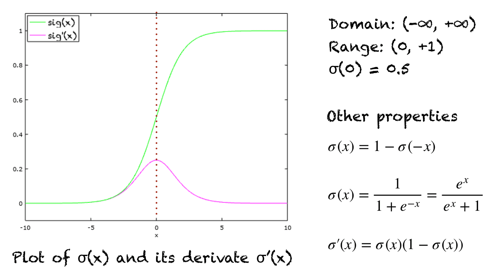
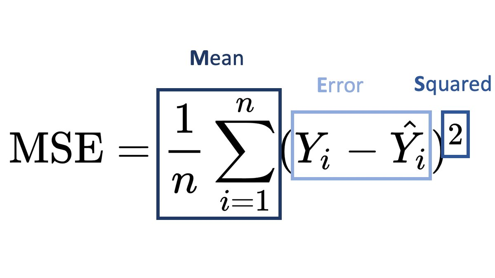
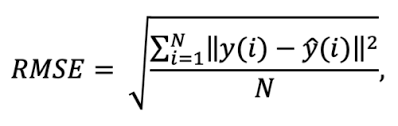
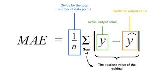

ML Project Notes
There are three types of machine learning:-
- Supervised Machine Learning- It is the type of machine learning where we are given both the dependent and independent variables
- Unsupervised Machine Learning- It is a type of machine learning where no lables are given
- Reinforcement Learning- This machine learning works on the principle of rewards and penalities
Supervised Learning
Supervised learning is a type of Machine Learning where the data is labelled, meaning we are given independent and dependent variables. There are two types of supervised learning:-
- Regression- It is the type of machine learning where we want to predict continuous values. E.g.:-
- Linear Regression
- Multiple Linear Regression
- Polynomial Regression
- Decision Tree
- Random Forest
Linear Regression
Linear Regression is a machine learning algorithm which uses the line of best fit to predict values. The line of best fit is the line which has the lowest amount of residuals, meaning the line with the lowest error.
- Classification- It is the type of machine learning where we want to predict categorical values, often replacing them with their encoded version.
- Logistic Regression
- Decision Tree
- Random Forest
- Naive Bayes
- SVM classification
Logistic Regression
This is a classification algorithm which uses the sigmoid function to calculate values for different data points and then decides upon a decision boundary, above that boundary the prediction is yes, otherwise it is no.
Here is the sigmoid function and its distribution

Error Evaluation
Error Evaluation is one of the most important parts in machine learning, there are different parameters for evaluating errors in different models.
- Regression
-
Mean Squared Error- In this we take sum of the squares of all the residuals.

-
Root Mean Squared Error- This is the square root of MSE, we use this to get the MSE in terms of the data points.

-
Mean Absolute Error- In this we take the Absolute value of the residuals and sum them.

- Classification
- Accuracy
- Recall
- F1-score
- Precision
- Confusion Matrix